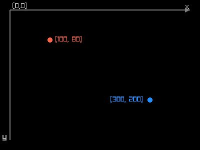
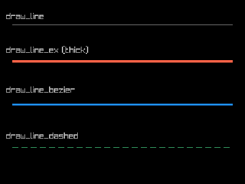
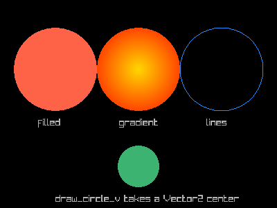
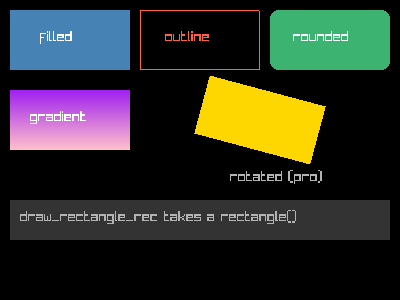
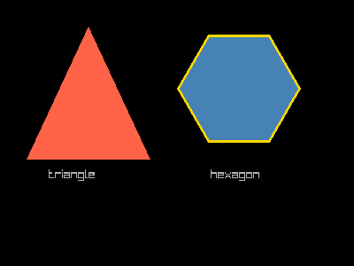
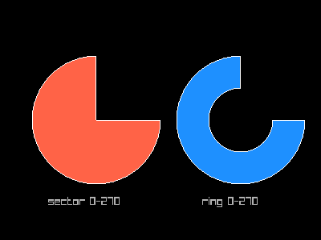
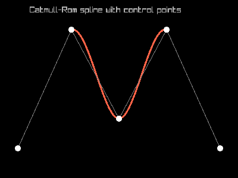
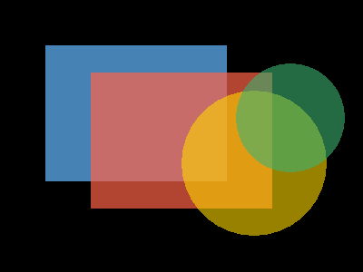

This guide covers all 2D shape-drawing functions available in
raylibr. Each example uses raylibr_screenshot() which
creates a hidden 400x300 window with a black background.
Coordinate system
The origin (0, 0) is at the top-left
corner. X increases to the right, Y increases downward.
raylibr_screenshot(function() {
# Axes
draw_line_ex(c(20, 20), c(380, 20), 2.0, "grey50")
draw_line_ex(c(20, 20), c(20, 280), 2.0, "grey50")
draw_text("x", 370L, 5L, 16L, "grey70")
draw_text("y", 5L, 265L, 16L, "grey70")
draw_text("(0,0)", 25L, 5L, 14L, "grey70")
# Arrowheads
draw_triangle(c(380, 20), c(370, 15), c(370, 25), "grey50")
draw_triangle(c(20, 280), c(15, 270), c(25, 270), "grey50")
# Sample points
draw_circle(100L, 80L, 5.0, "tomato")
draw_text("(100, 80)", 110L, 72L, 14L, "tomato")
draw_circle(300L, 200L, 5.0, "dodgerblue")
draw_text("(300, 200)", 220L, 192L, 14L, "dodgerblue")
})
Lines
raylibr_screenshot(function() {
draw_line(20L, 40L, 380L, 40L, "grey50")
draw_text("draw_line", 10L, 20L, 14L, "grey70")
draw_line_ex(c(20, 100), c(380, 100), 4.0, "tomato")
draw_text("draw_line_ex (thick)", 10L, 75L, 14L, "grey70")
draw_line_bezier(c(20, 170), c(380, 170), 3.0, "dodgerblue")
draw_text("draw_line_bezier", 10L, 140L, 14L, "grey70")
draw_line_dashed(c(20, 240), c(380, 240), 10.0, 5.0, "mediumseagreen")
draw_text("draw_line_dashed", 10L, 215L, 14L, "grey70")
})
draw_line_ex() and draw_line_bezier() take
Vector2 endpoints (two-element numeric vectors) and a
thickness argument.
Circles
raylibr_screenshot(function() {
draw_circle(80L, 100L, 60.0, "tomato")
draw_text("filled", 55L, 170L, 14L, "grey70")
draw_circle_gradient(c(200, 100), 60.0, "gold", "orangered")
draw_text("gradient", 172L, 170L, 14L, "grey70")
draw_circle_lines(320L, 100L, 60.0, "dodgerblue")
draw_text("lines", 298L, 170L, 14L, "grey70")
draw_circle_v(c(200, 240), 30.0, "mediumseagreen")
draw_text("draw_circle_v takes a Vector2 center", 80L, 280L, 14L, "grey70")
})
draw_circle() takes integer center coordinates, while
draw_circle_v() takes a c(x, y) vector.
Rectangles
raylibr_screenshot(function() {
draw_rectangle(10L, 10L, 120L, 60L, "steelblue")
draw_text("filled", 40L, 30L, 14L, "white")
draw_rectangle_lines(140L, 10L, 120L, 60L, "tomato")
draw_text("outline", 165L, 30L, 14L, "tomato")
draw_rectangle_rounded(rectangle(270, 10, 120, 60), 0.3, 10L, "mediumseagreen")
draw_text("rounded", 293L, 30L, 14L, "white")
draw_rectangle_gradient_v(10L, 90L, 120L, 60L, "purple", "pink")
draw_text("gradient", 30L, 110L, 14L, "white")
draw_rectangle_pro(
rectangle(260, 120, 120, 60),
c(60, 30), 15.0, "gold"
)
draw_text("rotated (pro)", 230L, 170L, 14L, "grey70")
draw_rectangle_rec(rectangle(10, 200, 380, 40), "grey20")
draw_text("draw_rectangle_rec takes a rectangle()", 20L, 210L, 14L, "grey70")
})
draw_rectangle_pro() supports rotation around an origin
point. draw_rectangle_rec() and
draw_rectangle_rounded() take a rectangle()
struct.
Triangles and polygons
raylibr_screenshot(function() {
draw_triangle(
c(100, 30), c(30, 180), c(170, 180),
"tomato"
)
draw_text("triangle", 55L, 190L, 14L, "grey70")
draw_poly(c(270, 100), 6L, 70.0, 0.0, "steelblue")
draw_text("hexagon", 238L, 190L, 14L, "grey70")
draw_poly_lines_ex(c(270, 100), 6L, 70.0, 0.0, 3.0, "gold")
})
draw_poly() draws a regular polygon: center, number of
sides, radius, rotation, color. draw_poly_lines_ex() draws
its outline with a given thickness.
Note: draw_triangle() vertices must be in
counter-clockwise order, or the triangle won’t
render.
Arcs and rings
raylibr_screenshot(function() {
draw_circle_sector(c(120, 150), 80.0, 0.0, 270.0, 36L, "tomato")
draw_circle_sector_lines(c(120, 150), 80.0, 0.0, 270.0, 36L, "white")
draw_text("sector 0-270", 60L, 245L, 14L, "grey70")
draw_ring(c(300, 150), 40.0, 80.0, 0.0, 270.0, 36L, "dodgerblue")
draw_ring_lines(c(300, 150), 40.0, 80.0, 0.0, 270.0, 36L, "white")
draw_text("ring 0-270", 252L, 245L, 14L, "grey70")
})
Angles are in degrees. 0 points right, and the arc
sweeps counter-clockwise. The segments
parameter controls smoothness (more segments = smoother curves).
Splines
Spline functions take a matrix of control points (one row per point, two columns for x and y):
pts <- matrix(c(
30, 250,
120, 50,
200, 200,
280, 50,
370, 250
), ncol = 2, byrow = TRUE)
raylibr_screenshot(function() {
draw_spline_catmull_rom(pts, 3.0, "tomato")
draw_spline_linear(pts, 1.0, "grey50")
# Draw control points
for (i in seq_len(nrow(pts))) {
draw_circle(as.integer(pts[i, 1]), as.integer(pts[i, 2]), 5.0, "white")
}
draw_text("Catmull-Rom spline with control points", 50L, 10L, 14L, "grey70")
})
Other spline types include draw_spline_bezier_cubic(),
draw_spline_bezier_quadratic(), and
draw_spline_basis().
Layering
Shapes are drawn in order using the painter’s algorithm: later calls
draw on top of earlier ones. Combine this with
color_alpha() for transparency effects:
raylibr_screenshot(function() {
draw_rectangle(50L, 50L, 200L, 150L, "steelblue")
draw_rectangle(100L, 80L, 200L, 150L, color_alpha("tomato", 0.7))
draw_circle(280L, 180L, 80.0, color_alpha("gold", 0.6))
draw_circle(320L, 130L, 60.0, color_alpha("mediumseagreen", 0.6))
})
See the Colors guide for more on transparency and color manipulation.